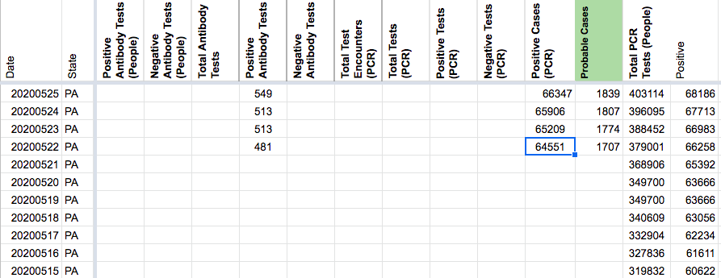
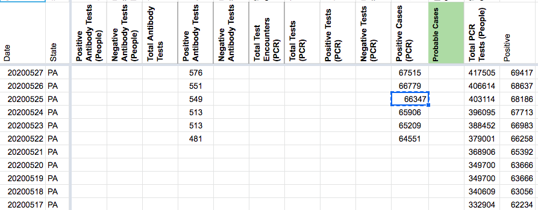

[PA] Explicit Probables Backfill
Issue number 839
jesseandersonumd opened this issue on September 16, 2020 at 10:01 am
Labels Historical Data Backfill
State or US: PA
Describe the problem PA started providing probables and confirmed values on 5/22. CTP started tracking confirmed values on 5/22 but started reporting probables on 7/28. We can backfill using positive - positive PCR cases and screenshots to have probables back until 5/22.
Sources: https://covidtracking.com/data/state/pennsylvania/screenshots
NEW VALUES FOR PROBABLES (5/22-9/15):
4264 4221 4182 4182 4126 4074 4049 4014 4001 3992 3982 3931 3897 3859 3834 3814 3801 3778 3741 3726 3701 3685 3652 3641 3627 3602 3576 3544 3529 3490 3474 3454 3438 3390 3391 3356 3355 3347 3337 3310 3280 3252 3229 3185 3174 3157 3141 3120 3080 3053 3036 3024 2993 2969 2950 2913 2890 2866 2863 2853 2827 2814 2792 2765 2727 2714 2688 2670 2665 2633 2608 2599 2587 2562 2536 2501 2491 2476 2459 3540 2414 2414 2396 2381 2349 2327 2325 2319 2311 2287 2275 2253 2238 2231 2225 2199 2814 2782 2758 2736 2733 2727 2713 2679 2661 2646 2620 2630 2607 2574 1938 1902 1858 1839 1807 1774 1707
Comments
AFTER: 
DC’d by DZL 9/24 14:26
BEFORE: 